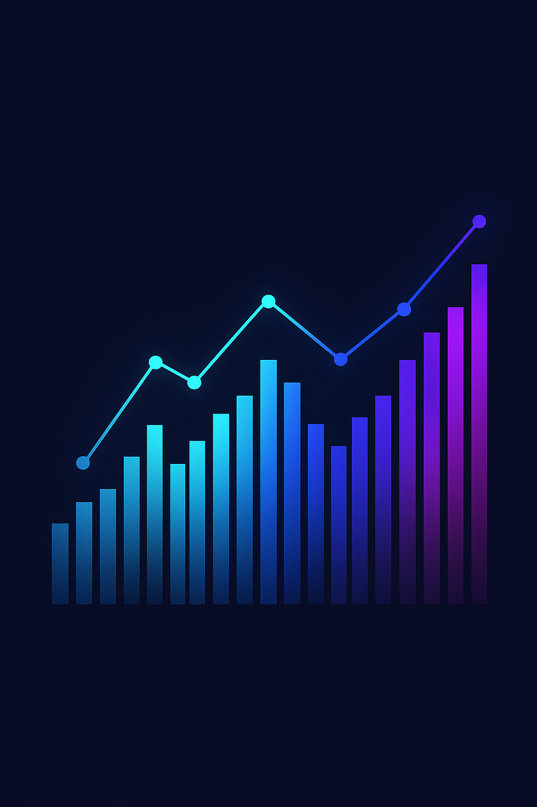

I am a
Harnessing data, machine learning and modern web technologies to build intelligent products.
View My Work Download ResumeI am a data scientist and software developer based in Baltimore, Maryland. I earned my Master of Professional Studies in Data Science from the University of Maryland, Baltimore County (UMBC) in May 2024, graduating with a GPA of 3.9/4.0. Prior to that, I completed a Bachelor of Technology in Information Technology from Gayatri Vidya Parishad College of Engineering in India.
Currently, I work as a Python Developer at LVTLABS, where I build cross‑platform apps and scalable microservices. Previously, I served as a Systems Engineer at Tata Consultancy Services, developing automated processes and integrating data from dozens of sources. My technical toolbox includes Python, JavaScript, SQL, FastAPI, FlutterFlow, Docker and modern machine‑learning libraries.
I’m passionate about leveraging data to solve real‑world problems—whether that means creating personalized recommendation systems, analysing social media to deliver targeted content, building accessible computer‑vision tools or optimising healthcare outcomes with predictive models.

An end‑to‑end recommendation engine that scrapes Goodreads, processes data and uses LLMs to deliver tailored reading lists.
Learn MoreAnalyses user sentiments and interests from tweets to serve personalised advertisements and content recommendations.
Learn MoreAn assistive tool that combines object recognition and scene understanding to enhance navigation for those with low vision.
Learn MoreData‑driven recommendations that enhance financial planning and resource allocation for more efficient healthcare.
Learn MoreStanford University (Coursera)
Jul 2023
DeepLearning.AI
Oct 2023
University of Michigan (Coursera)
Dec 2022
If you’d like to collaborate or just say hello, feel free to reach out!
Baltimore, MD, USA